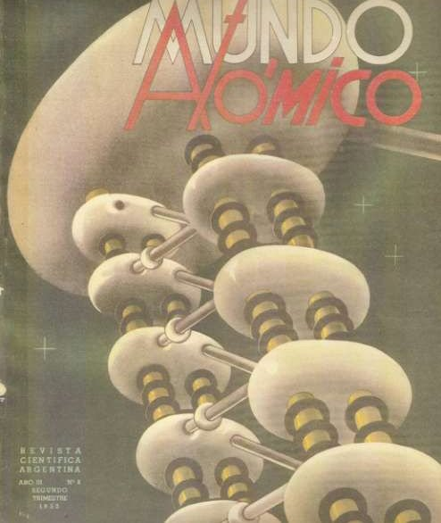
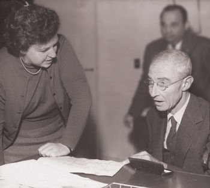
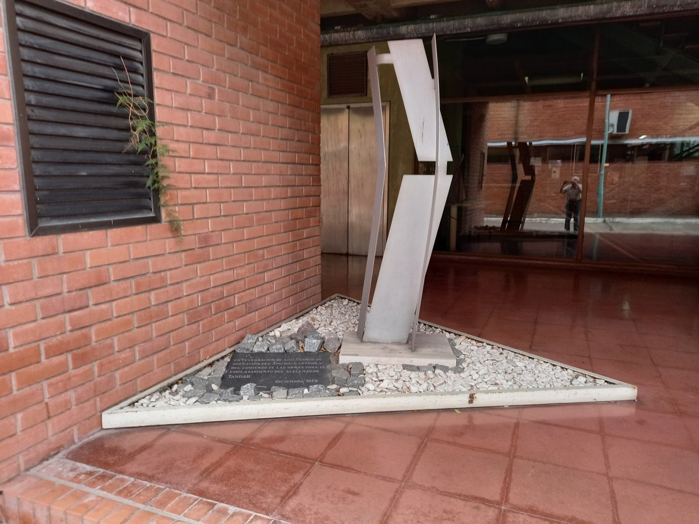

History
From a theoretical nuclear physics division founded around 1970 to today's Department: the story told by Ernesto Maqueda.
The Department of Theoretical Physics of Fundamental Interactions and Complex Systems was born around 1970 as the Theoretical Nuclear Physics Division of CNEA, Argentina's National Atomic Energy Commission. Its roots lie in the theoretical nuclear physics group that Daniel Bes built at the Faculty of Exact and Natural Sciences of the University of Buenos Aires (UBA) in the early 1960s, a group scattered abroad after the 1966 “Night of the Long Batons”. From 1968 on, encouraged by Emma Pérez Ferreira, several of its members came back and regrouped at CNEA's Nuclear Physics Department: first Ernesto Maqueda, then Roberto Perazzo, Willy Dussel and, in 1971, Bes himself. Marcos Saraceno joined in 1975.
The group grew together with the TANDAR project: its members taught most of the courses of the training programme, organised the Nuclear Physics Workshops and, in 1983, were the first to move into the new accelerator building, where the Department still works today. Dozens of PhD theses came out of its doctoral programme, and the research moved from nuclear structure and reactions to quantum chaos, hadron and quark physics, condensed matter and complex systems. Today the Department brings together researchers, fellows and emeritus researchers. The detailed history below was written by Ernesto Maqueda.
- 1961Bes starts the theoretical nuclear physics group at UBA
- 1966Night of the Long Batons: the group scatters abroad
- 1968Maqueda returns and nuclear theory starts at CNEA
- c. 1970The Theoretical Nuclear Physics Division is created
- 1971Daniel Bes returns
- 1975Marcos Saraceno joins; the TANDAR accelerator is decided
- 1983Move to the TANDAR building
- 1986The TANDAR Laboratory is officially opened
- 2007CNEA's divisions are renamed departments
Text by Ernesto Maqueda, with the collaboration of Marcos Saraceno; translated from Spanish. The account is deliberately impersonal. The names of the Division and the Department changed over the years; the text uses them interchangeably and always abbreviates them as DFNT.1
Prehistory
To understand why CNEA had a theoretical nuclear physics group at all, one has to go back to 1961 and to the Faculty of Exact and Natural Sciences (FCEN) of the University of Buenos Aires.
In 1960 Daniel Bes had returned to CNEA from Copenhagen, where he had worked with Ben Mottelson and Aage Bohr (Nobel laureates in 1975) on the unified model of the nucleus. Bes had joined CNEA in 1954 and had gone to Denmark on a CNEA fellowship.
In 1961 the FCEN opened competitions for professorships; Bes won one and moved there. Full-time academic positions were expanding in those years, especially at the FCEN.
Invited by Juan José Giambiagi, Pedro Federman, Ernesto Maqueda and Andrés Zuker applied for teaching-assistant positions and became Bes's first students. In the following years they were joined by Ricardo Broglia, Guillermo (Willy) Dussel and Roberto Perazzo, and also by Anthony Evans, an English physicist who had published with David Thouless (a future Nobel laureate, 2016) one of the founding papers of quantum many-body theory.
Alongside the theoretical nuclear physics group, other theoretical and experimental groups grew at UBA in elementary particles, low temperatures, astronomy, plasmas and cosmic rays, among other fields (Juan Roederer had also moved from CNEA to UBA). Between 1958 and 1966 there was a widespread conviction that the gap with the leading research centres could be closed.

Under Bes's supervision, Ricardo Broglia (Nuclear collective motion and the many-body problem in the N = 2 shell of the harmonic oscillator), Ernesto Maqueda (Exact treatment of the nuclear residual interactions) and Andrés Zuker (Gamma vibrations in deformed nuclei and the rotation–vibration interaction) obtained their PhDs in 1964, and Willy Dussel (Effects of anharmonic terms of the quadrupole force in the Cd isotopes) in 1967. Roberto Perazzo obtained his in 1966 under Anthony Evans (The two-particle random phase approximation and its application to light nuclei).
The plan was for the members of the group to train abroad in the leading topics of nuclear physics. Pedro Federman went to the Weizmann Institute (Rehovot, Israel) to do his PhD with Igal Talmi, an expert on the shell model. Ernesto Maqueda went to the University of Sussex (England) to work with J. P. Elliott, who had introduced the SU(3) group to describe nuclear rotations and vibrations within the shell model. Andrés Zuker went to Oxford, where he specialised in nuclear structure calculations; Ricardo Broglia went to Copenhagen, Willy Dussel to Pittsburgh and Roberto Perazzo to Minneapolis.
The diaspora
On 29 July 1966 came the “Night of the Long Batons”, when the police violently evicted the occupied faculties of UBA after the military government took over the universities; it was followed by the mass resignation of FCEN faculty and an exodus. Warren Ambrose, an MIT mathematician, was among those beaten by the police; his letter to the New York Times gave the events international repercussion, and the solidarity of the academic world eased the emigration of professors and advanced students.
Those who were abroad stayed abroad:
- Daniel Bes became a professor in Pittsburgh and later in Minneapolis.
- Anthony Evans went to Sussex.
- Willy Dussel was hired in Pittsburgh and Roberto Perazzo in Minneapolis.
- Pedro Federman, after his PhD in Rehovot, was hired at Harwell (England).
- Ernesto Maqueda moved from Sussex to the California Institute of Technology (Caltech), and Andrés Zuker from Oxford to Brookhaven National Laboratory (USA).
The return
After 1966 CNEA tried to rescue part of what the government takeover of UBA had destroyed: it hired some of the young researchers, and its Nuclear Physics Department kept alive the FCEN's traditional physics colloquia.
The Nuclear Physics Department in 1968
At the time, CNEA's “departments” were the equivalent of today's management units (gerencias), and its “divisions” the equivalent of today's departments: in 2007 a “Galilean transformation” renamed them all without changing their relative rank. The Nuclear Physics Department is the forerunner of today's Research and Applications Management (GIyA); in 1968 it was headed by Emma Pérez Ferreira.
The Department was located at CNEA's headquarters,2 where the laboratories and experimental facilities were, and had three divisions: Nuclear Spectroscopy (DEN), Nuclear Reactions (DRN) and Elementary Particles (DPE).
Nuclear Reactions Division (DRN)
The DRN carried out experiments with the 28 MeV deuteron beam of the synchrocyclotron. Opened in 1954, it was then a world-class machine; among other achievements, twenty radioisotopes3 and the diproton4 had been discovered with it. By 1968 a beam suitable for transfer reactions had been extracted, and the purchase of a more modern heavy-ion accelerator (a 130 MeV isochronous cyclotron) was being explored.
Nuclear Spectroscopy Division (DEN)
The DEN had two beta spectrometers and a mass separator. It also used a Cockcroft–Walton voltage multiplier that accelerated protons up to 1.2 MeV. Before the diaspora, Daniel Bes had suggested using the neutrons produced with it to study isotopes far from the line of stability.

Elementary Particles Division (DPE)
Until the early 1960s the DPE had two activities: cosmic radiation and nuclear emulsions. Cosmic-ray research, led by Juan Roederer, was one of the fields that gave CNEA international standing, and important contributions had also been made with nuclear emulsions.

The theoretical nuclear physics group takes shape
In January 1968 Ernesto Maqueda, who had moved from Sussex to Caltech, decided to return to Argentina and accepted a position in the Nuclear Reactions Division.
After his arrival, Olga Dragún, who had joined the DRN after the exodus from the FCEN and had developed methods to measure the energy of the deuteron beam, moved on to microscopic calculations and nuclear reaction mechanisms.
Jorge Testoni, an experimentalist of the DRN, took part in Dragún and Maqueda's work on two-nucleon transfer reactions in the p shell, starting a collaboration with the theorists that would last a long time.
Silvia Reich, with a CNEA fellowship, and Pedro Ripa Alsina, with a fellowship from the National Research Council (CONICET), also joined to work on theoretical nuclear physics.
In mid-1969 Roberto Perazzo returned to the DRN and Willy Dussel to the DEN. In 1970 Hugo Sofía, who had been hired to work at the synchrocyclotron, also moved to theory.
Whatever division they formally belonged to, they all worked on theory, and mostly in collaboration.
Emma Pérez Ferreira had much to do with the return of those who were abroad. She was exemplary at finding the most effective ways to create working conditions that would retain scientists and engineers and bring them back.
The Theoretical Nuclear Physics Division
The end of the Elementary Particles Division
In the early 1960s the cosmic-ray group had moved to the FCEN to form a joint CNEA–UBA–CONICET institute, which in time became the IAFE5 (some of its staff remained CNEA employees).
By 1968–69 the nuclear-emulsion group needed new equipment worth at least a million dollars of the time to become competitive again, and even then it would depend on emulsions exposed at facilities abroad (Brookhaven), not always in the most interesting experiments. Emma Pérez Ferreira decided, although it was her own research field, to discontinue elementary particle physics and to concentrate all efforts on nuclear spectroscopy, reactions and theory. The few people left in the DPE were moved to other parts of CNEA.
The Theoretical Nuclear Physics Division is created
Emma Pérez Ferreira used the empty box left in the organisation chart by the Elementary Particles Division to create the Theoretical Nuclear Physics Division, to which Olga Dragún, Willy Dussel, Ernesto Maqueda, Roberto Perazzo, Silvia Reich and Hugo Sofía were assigned. Maqueda was appointed head.
The next step was to find a suitable place for the whole group. Thanks to the generosity of the experimentalists, several offices were obtained in the central block of the building at Libertador 8250, around a classroom and meeting room with blackboards covering “3π” (almost every wall): the forerunner of the theorists' present meeting room in the TANDAR building.
First works
- Olga Dragún obtained her PhD under Ernesto Maqueda (A study of two-particle transfer reactions in the p shell).
- Silvia Reich obtained hers under Roberto Perazzo (Collective treatments of the pairing force, in Spanish).
- Pedro Ripa Alsina quickly completed a study on the determination of the matrix elements of the nucleon–nucleon interaction6 and then continued his training abroad.
- Willy Dussel and Roberto Perazzo worked on Bohr's collective model and the pairing Hamiltonian.
- Dragún, Dussel, Maqueda and Perazzo developed the formalism of alpha-transfer reactions and proposed a (d, 6Li) experiment, which was carried out with the 27.2 MeV deuteron beam of the synchrocyclotron.7
The 1970s
Daniel Bes returns
In 1970 it was Argentina's turn to host the Latin American School of Physics (ELAF), held every year since 1959 in Mexico, Brazil and Argentina in turn, with courses by international experts on current topics. The 1970 school had two venues: nuclear physics at CNEA in Buenos Aires, and solid-state, particle and field theory at the National University of La Plata.
Daniel Bes was invited to lecture at the School, and that is when he decided to come back. As he tells in his autobiographical account,8 he and his wife were considering “no longer being immigrants” and, although he was “comfortable and tenured at the University of Minnesota”, it mattered “that part of the UBA nuclear group had been rebuilt”. He rejoined CNEA in 1971, bringing along for a couple of years Nicholas C. Kraus,9 one of his PhD students in Minnesota.
Other returns and arrivals
In 1970 Mario Mariscotti, also part of the 1966 diaspora, returned from Brookhaven to join the DRN as an experimentalist. In the United States he had ventured into theory (for instance, a model of the rotational bands of even–even nuclei10), which led to a fruitful interaction with the theory group.11
Between 1974 and 1976 Roberto Liotta, a physicist from Rosario who had been at the Niels Bohr Institute in Copenhagen and had collaborated with DFNT members, worked part-time with the group.
In 1975 there was an opportunity to hire Marcos Saraceno, who had gone to MIT in 1966 and obtained his PhD there. As at other times, CNEA had restrictions on hiring for activities “unrelated to nuclear technology”. CNEA's president, Admiral Oscar Iraolagoitía, said the only way was for him to study thorium reactors; the result was published as a CNEA Technical Report.12
Structural changes
In 1973, after the change of government, Admiral Oscar Iraolagoitía replaced Admiral Oscar Quihillalt, who had been CNEA's president for sixteen years over two terms (from 1955, with a break between 1958 and 1960). Iraolagoitía had already been president of CNEA under Juan Domingo Perón.
The new administration created a Directorate for Research, Development and Services, headed by Emma Pérez Ferreira. Ernesto Maqueda became head of the Nuclear Physics Department and Roberto Perazzo head of the Theoretical Nuclear Physics Division. In 1975 Mario Mariscotti replaced Maqueda as head of the Department.
In 1974 the Nuclear Reactions and Nuclear Spectroscopy divisions had merged into an Experimental Nuclear Physics Division. In 1976 the Nuclear Physics Department became the Physics Department, when part of the former Atomic and Molecular Physics Department joined it as the Solid State Physics Division.
How the group worked, and some research topics
The whole group met regularly to present topics of interest. On one of the blackboards there was a table with topics in the rows and the names of the Division members in the columns, where everyone marked the topics they wanted to take part in; it was ironically called the chantómetro (roughly, the “bluff-meter”).
Some of the research topics were:
- the pairing Hamiltonian: collective treatment, vibrations and rotations, shell-model analysis;
- two- and four-nucleon transfer reactions;
- nuclear field theory, developed in Buenos Aires with the participation of Ben Mottelson (Copenhagen), which had a strong impact because it solved the overcompleteness problem in descriptions that include both collective and quasiparticle elementary modes.13
Hugo Sofía obtained his PhD in 1974 under Daniel Bes (Nuclear field theory). Without formally belonging to the DFNT, Armando Ferrero obtained his in 1975 under Ernesto Maqueda ((d, 6Li) reactions: a coupled-channels analysis).
The TANDAR
In 1975, to renew the experimental facilities, it was decided to pursue the purchase of a heavy-ion accelerator, later named TANDAR. The project covered the selection, purchase, construction and installation of the accelerator and its peripheral equipment, and the construction of a building for the offices of the then Physics Department, on a four-hectare plot ceded by INTI next to the Constituyentes Atomic Centre.
Construction of the accelerator began in December 1979, when the synchrocyclotron turned 25. The first beam was obtained in November 1984, and the first papers using the accelerator were published in 1986.

In early 1983, once the offices of the new building were finished, the Experimental and Theoretical Nuclear Physics divisions moved in, the theorists first. A classroom was set up on level +63 of the accelerator tower, where the weekly physics colloquia and the yearly nuclear physics workshops were held.
Until February 1990 the TANDAR site was separate from the rest of the Constituyentes Atomic Centre and had its own access rules, similar to those of a scientific and academic institution; that year CNEA's authorities decided to end this independence.
Mario Mariscotti was head of the Physics Department from 1975 to 1982. Emma Pérez Ferreira led the TANDAR Project and, from 1982, the Department as well. From 1984 to 1989 Ernesto Maqueda was head of the Department and Edgardo Ventura head of the TANDAR Project.
The TANDAR Project training programme
When the project was approved, and since the new facility would need many more scientists, Ernesto Maqueda, following an idea of Marcos Saraceno, proposed a training programme to recruit and train some 15 to 18 physics graduates. The project management approved the idea and gave it the same priority as the experimental facility itself. An ad hoc committee was formed by Ernesto Maqueda,14 Gerardo García Bermúdez and Marcos Saraceno.
For three consecutive years candidates were selected through exams and interviews, aiming at the standards of admission to top graduate schools, since the training included stays abroad to gain experience in topics to be developed later with the new facility. Eighteen physicists were admitted in total.15 The theorists taught most of the courses of the first two years. The programme (its positions and funding) was made possible by the management skills and ingenuity of Emma Pérez Ferreira and Edgardo (Egui) Ventura, and by the support of the head of the Department, Mario Mariscotti.
Although the programme aimed at training experimentalists for the Experimental Nuclear Physics Division, María Elena Spina, Jorge Dukelsky and Alejandro Fendrik also took part in it and joined the DFNT. Spina obtained her PhD in Heidelberg (Germany) under Hans Weidenmüller (Collectivity and statistics in deep-inelastic heavy-ion reactions, 1983); Dukelsky (The leading-series approximation, 1981) and Fendrik (Phenomenological and microscopic study of four-particle excitations in heavy nuclei, 1986) were supervised by Willy Dussel.
Although not formally a member of the DFNT, Aníbal Gattone supervised PhD theses on theoretical topics and published joint work with Olga Dragún,16 17 Willy Dussel and Ernesto Maqueda.18
The Nuclear Physics Workshops
In 1975 the Nordic countries were planning new equipment similar to CNEA's and, mostly with researchers of the Niels Bohr Institute in Copenhagen, had prepared a feasibility study with proposals for experiments with a heavy-ion accelerator. In mid-1977 Olga Dragún and Ernesto Maqueda organised a meeting (Winter I) to study the Copenhagen report locally and help define the kind of accelerator wanted.
In January 1978 and 1979 Roberto Perazzo, Olga Dragún and Julio Rossi (Experimental Nuclear Physics Division) organised Nuclear Physics Workshops I and II in Bariloche, with researchers from CNEA (Bariloche and Buenos Aires), the universities of La Plata and Rosario, Chile and Brazil. Jochen Biersack (Hahn-Meitner-Institut, Berlin) and Kirk McVoy (Wisconsin) took part in the first one, and Antoine Salin (Bordeaux) in the second.
Workshops III (1980) and IV (1981) were held in Buenos Aires and added short courses by specialists: in 1980 Ben Bayman (Minnesota), H. R. McK. Hyder (Oxford) and Frank S. Stephens (Berkeley); in 1981 Sven Bjørnholm (Niels Bohr Institute, Copenhagen) and Malcolm Macfarlane (Indiana). They were again organised by Olga Dragún, Roberto Perazzo and Julio Rossi.
Workshop V took place in April 1982 in Chapadmalal, in the difficult circumstances of the Falklands/Malvinas war. A large delegation from Brazil attended, as well as researchers from Chile, Mexico and Venezuela. The lecturers were Hans Mang (Munich), Jim Ball (Oak Ridge) and Raphael D. Levine (Hebrew University of Jerusalem), and the organisers Olga Dragún and Roberto Perazzo.
Workshop VI (1983), organised by Jorge Fernández Niello and Roberto Perazzo, was the first held in the TANDAR building.

The Nuclear Physics Workshops continued every year until the 1990s, organised jointly by experimentalists and theorists and attended by researchers from across Latin America.
The inauguration
Since the TANDAR was one of the most advanced heavy-ion accelerators of its time, and given the problems other similar machines had had, it was considered wise to wait until the first papers based on it had been published before opening it officially.
In October 1986 Workshop VIII was held, organised by Roberto Perazzo and Hugo Sofía; besides the usual Latin American participants, heads of scientific institutions from Bangladesh, Brazil, Colombia, Cuba, Morocco, Mexico, Peru, Thailand, Turkey and Yugoslavia were invited. On 24 October 1986, in the presence of President Raúl Alfonsín, the TANDAR Laboratory was officially opened.
The DFNT since 1983
Between 1984 and 1986 Roberto Perazzo moved “to the other side of the counter” as Undersecretary for Coordination and Planning at the Secretariat of Science and Technology, and from 1987 to 1989 he was a member of CNEA's board. In 1990 he became director of UBA's Centre for Advanced Studies, and from 2001 he organised and led the PhD programme of the Buenos Aires Institute of Technology (ITBA).
In 1986 Willy Dussel moved to the FCEN to take part in the reorganisation of its Physics Department, which he later chaired.
For some years, to avoid “academic inbreeding”, the Division required candidates for permanent positions to have completed a PhD and a postdoctoral stay elsewhere, preferably abroad. This was possible because at the time such a candidate could join CNEA without much difficulty, possibly through CONICET's research career. When hiring in basic science was restricted from 1990 on, the Department was unable to bring back some of the researchers who had gone abroad for further training.
Cristina Cambiaggio joined the DFNT in 1983. She had worked in nuclear physics at the FCEN until 197419 and in 1976 had entered CONICET's research career, based at the National University of La Plata. She headed the DFNT from 1990 to 1994.
Leszek Szybisz was a member of the Division from 1989. He had obtained his PhD at the FCEN in 1972 with a thesis on nuclear beta decay. From 1973 to 1975 he stayed at the Karlsruhe Nuclear Research Centre (Germany) with fellowships from CONICET and that institution. From 1976 he was a CONICET researcher, based at the National University of La Plata (1976–1978) and at the Catholic University of Argentina (1978–1988). His research covered variational methods for many-body systems, nuclear levels studied through reactions, Monte Carlo simulations, and classical and quantum fluids.
Alejandro Rivas was a PhD fellow from 1991 to 1995. He obtained his PhD in 1999 at the Brazilian Center for Physics Research (CBPF, Rio de Janeiro) under Alfredo Ozorio de Almeida (Weyl quantisation on the torus and applications), was a postdoc at the Pontifical Catholic University of Rio de Janeiro, and joined the DFNT in 2002.
Guillermo Zemba did his undergraduate thesis at the DFNT under Cristina Cambiaggio (1985) and his PhD at MIT under Barton Zwiebach (Topics in Two Dimensional Quantum Gravity and Chern-Simons Gauge Theories, 1991). He was a postdoc at CERN and at the University of Turin. He joined CNEA in 1996 at the Bariloche Atomic Centre and moved to the DFNT in 2000.
Ana Gabriela Grunfeld joined in 2003. She had obtained her PhD at the National University of La Plata in 2000 under Huner Fanchiotti (Effective models for vector mesons) and had been a postdoc at the Federal University of Rio de Janeiro, at the DFNT itself, in Darmstadt (Germany) and at Sultan Qaboos University (Oman).
The PhD programme
Building on the experience of the training programme, in 1983 CNEA was asked to create four-year PhD fellowships for the Physics Department, with an entrance exam and a structure similar to that of graduate schools. Until then CNEA's professional fellowships lasted two years.20
Between the end of the training programme and the start of the PhD programme (1984), a few students joined the DFNT to do their PhDs:
- Norberto Scoccola: Convergence of nuclear field theory and its application to the lead isotopes, 1985. Supervisor: Daniel Bes.
- María Teresa Mehr: Perturbative calculation of nuclear moments of inertia, 1985. Supervisor: Daniel Bes.
- Patricia Curutchet: Electromagnetic decay of giant resonances in heavy-ion reactions, 1985. Supervisor: Hugo Sofía.
- Silvia Lenzi: Coherent contributions of two or more nucleons in spherical and deformed nuclei, 1987. Supervisor: Ernesto Maqueda.
- Edgardo Ferrán: Collective properties of neural processing, 1989. Supervisor: Roberto Perazzo.
Norberto Scoccola was a postdoc in Saclay (France), Regensburg (Germany) and Copenhagen (Denmark), and joined the Division in 1992.
Within the Physics Department's PhD programme, the theses listed below were completed in the Division (titles translated from Spanish). Those who are members of the Department today are marked ★.
| PhD student | Year | Thesis | Supervision |
|---|---|---|---|
| Martín Bernath | 1987 | A modified coupled-channels formalism in the Born approximation for heavy-ion reactions on deformed nuclei | O. Dragún |
| Edgardo Ferrán | 1989 | Collective properties of neural processing | R. Perazzo |
| Jorge Kurchan | 1989 | Collective coordinates in many-body problems | D. Bes |
| Patricio Leboeuf | 1989 | The semiclassical limit of classically non-integrable systems | M. Saraceno |
| Horacio Fortunato | 1990 | Thermal treatment of finite systems | G. Dussel, H. Sofía |
| Marcelo Chiapparini | 1991 | Relativity in nuclear physics: medium effects in nuclei and hypernuclei | A. Gattone |
| Fermín Aldabe | 1994 | BRST invariance applied to the quantisation of solitons | D. Bes |
| Eduardo Izquierdo | 1994 | Axial currents in hadronic field theories | A. Gattone |
| Raúl Vallejos | 1995 | Semiclassical quantisation of ergodic maps | M. Saraceno |
| ★ Eduardo Vergini | 1995 | Quantum and semiclassical study of classically chaotic billiards | M. Saraceno |
| Carlos Schat | 1996 | Electromagnetic and strong properties of hyperons in the bound-state soliton model | N. Scoccola |
| Esteban Seva | 1996 | Spreading width of giant multipole resonances | H. Sofía |
| Juan Pedro Garrahan | 1997 | Lagrangian BRST treatment of collective coordinates | D. Bes |
| María Rosa Spinella | 1997 | Low-energy electron scattering by metal clusters | O. Dragún |
| Luis Martín Kruczenski Gainza | 1998 | Quantum aspects of solitons in field theories | N. Scoccola |
| ★ Gabriel Carlo | 2000 | Semiclassical theory of short periodic orbits | E. Vergini |
| Fernando Simonotti | 2000 | Eigenfunctions of the Bunimovich billiard in the coherent-state representation | M. Saraceno |
| Ignacio Urrutia | 2004 | title to be confirmed | L. Szybisz |
| Ignacio García-Mata | 2006 | Diffusion and dissipation in quantum maps and algorithms: spectral quantum–classical correspondence and noise models | M. Saraceno |
| David Marcelo Schneider | 2007 | Matrix elements in classically chaotic systems, with applications to the cat map | E. Vergini, A. Rivas |
| ★ Leonardo Ermann | 2009 | Localisation and transport in periodic chains of chaotic maps | M. Saraceno, G. Carlo |
| Gustavo Aníbal Contrera | 2011 | Hadron properties and quark matter in effective quark models with non-local interactions | N. Scoccola |
| Lisandro A. Raviola | 2011 | title to be confirmed | G. Carlo, A. Rivas |
| Juan Manuel Pedrosa | 2013 | Towards a semiclassical approach to chaotic scattering systems | D. A. Wisniacki, G. Carlo |
| Valeria Pagura | 2013 | Non-local quark models at finite temperature and chemical potential: phase diagram and hadronic observables | N. Scoccola |
| Emiliano J. González de Urreta | 2015 | Baryons in the 1/Nc expansion of quantum chromodynamics | N. Scoccola |
| Pablo Guillermo Allen | 2016 | The phase structure of quantum chromodynamics (QCD) in strong magnetic fields from effective models | N. Scoccola |
| ★ Máximo Coppola | 2023 | Properties of light hadrons in strong magnetic fields from effective quark models | N. Scoccola |
| ★ Pablo Bergamasco | 2024 | Ergodicity, entropy and entanglement in multipartite systems | G. Carlo, A. Rivas |
The Department today
In November 2026 the Department has nine active members:
- Pablo Bergamasco
- Joined CNEA in 2015 and the Department in 2023. PhD in 2024 under Gabriel Carlo and Alejandro Rivas (Ergodicity, entropy and entanglement in multipartite systems).
- Gabriel Carlo
- A graduate of the PhD programme: PhD in 2000 under Eduardo Vergini (Semiclassical theory of short periodic orbits). Postdoc at the Max Planck Institute for the Physics of Complex Systems (Dresden, Germany) and at the University of Insubria (Como, Italy). Returned to the Department in 2006.
- Máximo Coppola
- PhD in April 2023 under Norberto Scoccola (Properties of light hadrons in strong magnetic fields from effective quark models). Postdoc at the National University of La Plata; joined the Department in December 2023.
- Leonardo Ermann
- A graduate of the PhD programme: PhD in 2009 under Marcos Saraceno and Gabriel Carlo (Localisation and transport in periodic chains of chaotic maps). Postdoc (2009–2011) at the Laboratoire de Physique Théorique, Université Paul Sabatier (Toulouse, France).
- Sebastián Ferraris
- Joined the Department in 2018. He is doing his PhD under Gabriela Grunfeld on effective models, phase transitions of quantum chromodynamics and astrophysical applications.
- María Florencia Izzo Villafañe
- PhD (2013–2017) at the National University of La Plata under Daniel Gómez Dumm (Chiral models of the strong interactions: meson phenomenology and phase transitions in external magnetic fields). Joined the Department in December 2022.
- Viviana Ramunni
- CONICET researcher; joined the Department in 2026.
- Alejandro Rivas
- CNEA PhD fellow from 1991 to 1995. PhD (1995–1999) at the CBPF with a fellowship from the Latin American Centre for Physics, under Alfredo Ozorio de Almeida (Weyl quantisation on the torus and applications). Postdoc (1999–2002) at the Pontifical Catholic University of Rio de Janeiro; joined the Department in 2002.
- Pablo Sesin
- PhD in 2023 at the Instituto Balseiro under Alejandro Fainstein (Dynamical back-action in semiconductor optomechanical resonators). After a short postdoc in the Devices and Sensors group of the Bariloche Atomic Centre, he joined the Department in January 2024.
There are also five emeritus (retired) researchers: Ernesto Maqueda, Marcos Saraceno, Norberto Scoccola, Eduardo Vergini and Guillermo Zemba.
Notes
- The names of the Division and the Department changed over the years.
- Avenida del Libertador 8250, Buenos Aires.
- R. Radicella, “La química nuclear argentina en la década del cincuenta y el descubrimiento de nuevos radioisótopos”, Ciencia e Investigación 52 (3/4) (1999).
- O. M. Bilaniuk and R. J. Slobodrian, “Diproton and the He3(d, t)He2 reaction”, Physics Letters 7, 77 (1963).
- Institute of Astronomy and Space Physics.
- P. Ripa and E. E. Maqueda, “N-N interaction matrix elements from phase shifts and the Jost function”, Nuclear Physics A 166, 534 (1971).
- O. Dragún, G. G. Dussel, E. Maqueda and R. P. J. Perazzo, “On the (d, 6Li) reaction”, Nuclear Physics A (1971); A. E. Ceballos et al., “The (d, 6Li) reaction in 64,66,68Zn isotopes at 27.25 MeV”, Nuclear Physics A 208, 617 (1973).
- D. R. Bes, “Mis intentos por perfeccionar el conocimiento de las cosas naturales y de todas las artes útiles (en física nuclear)”, Ciencia e Investigación, Reseñas, vol. 1, p. 7 (2013), in Spanish.
- “An interview with Nicholas C. Kraus”.
- M. A. J. Mariscotti, G. Scharff-Goldhaber and B. Buck, “Phenomenological analysis of ground-state bands in even-even nuclei”, Physical Review 178, 1864 (1969).
- M. A. J. Mariscotti, D. R. Bes, S. L. Reich, H. M. Sofía et al., “Search for two-octupole-phonon states in 208Pb”, Nuclear Physics A 407, 98 (1983).
- M. Saraceno, “Utilización del torio en reactores de potencia” (Use of thorium in power reactors), CNEA Technical Report 448 (1978).
- D. R. Bes, G. G. Dussel, R. A. Broglia, R. Liotta and B. R. Mottelson, “Nuclear field theory as a method of treating the problem of overcompleteness in descriptions involving elementary modes of both quasi-particles and collective type”, Physics Letters B (1974); R. A. Broglia, B. R. Mottelson, D. R. Bes, R. Liotta and H. M. Sofía, “Treatment of the spurious states in nuclear field theory”, Physics Letters B (1976).
- From October 1976 to November 1977 Maqueda was on sabbatical in Sussex and was replaced by Willy Dussel.
- D. Abriola, C. Acuña, C. Alonso Arias, M. C. Berisso, J. M. Carcione, M. Debray, D. Di Gregorio, E. Doering, J. Dukelsky, A. Etchegoyen, A. Fendrik, A. Gattone, J. Fernández Niello, H. Huck, O. A. Macchiavelli, A. Pacheco, R. Pakula and M. E. Spina.
- O. Dragún, A. M. J. Ferrero and A. O. Gattone, “The (p, d) reaction: a good test to elucidate the strength of large energy loss one-step processes”, Physics Letters B (1982).
- A. O. Gattone, A. M. J. Ferrero and O. Dragún, “The contribution of one- and two-step processes to inclusive (p, d) reactions”, Nuclear Physics A (1984).
- G. G. Dussel, A. O. Gattone and E. E. Maqueda, “Prediction of enhanced large-angle scattering in heavy-ion elastic reactions”, Physical Review Letters (1983).
- In 1974 the government had taken over UBA and dismissed a large part of its teaching staff.
- CNEA's presidency decided that the Bariloche Atomic Centre should also have PhD fellowships.